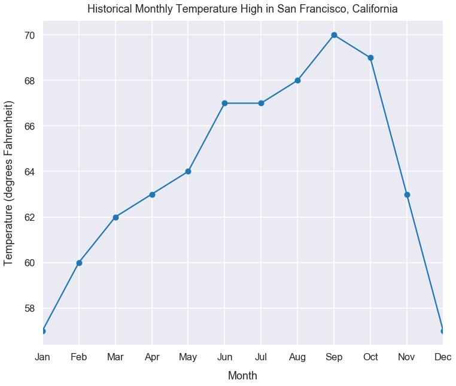
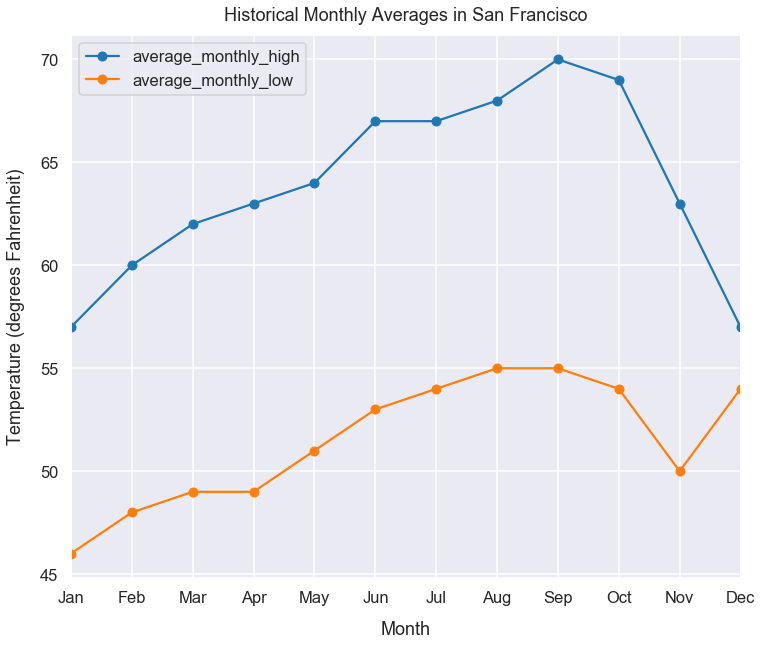
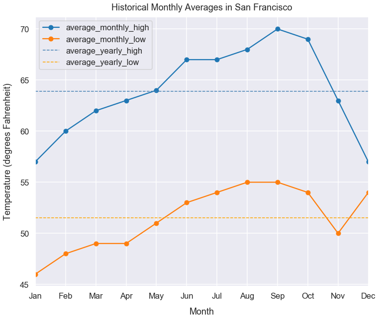

Learning Exercise 0 Answers
- Jul 22 • 14 min read
- Key Terms: line plot, benchmarking
Import Modules
import pandas as pd
import numpy as np
import seaborn as sns
import matplotlib.pyplot as plt
% matplotlib inline
Historic Weather Monthly Averages in San Francisco Dataset
In the city of San Francisco, California, companies use technology to record the temperature throughout the day. With records of many years, they've created an average high and low temperature for each month. I found the data online and store it in Python lists below.
I'd like us to examine the data further to learn more from it.
Is San Francisco a cold or warm city? Let's use data to make our best suggestion!
average_monthly_lows = [46, 48, 49, 49, 51, 53, 54, 55, 55, 54, 50, 54]
average_monthly_highs = [57, 60, 62, 63, 64, 67, 67, 68, 70, 69, 63, 57]
months = [date.strftime("%b") for date in pd.date_range(start='1/2017', end='1/2018', freq='M')]
df = pd.DataFrame({'month': months, 'average_monthly_high': average_monthly_highs,
'average_monthly_low': average_monthly_lows})
Make a line plot of the historical average_high over months
- Because temperature measurements are of a single point in time, not a summation or count, we ought to use a line chart to show a change over time. The x-axis is a time period too so it makes sense to connect the dots/points with lines since months proceed in a defined order.
- x-axis ticks each represent the months of the years, starting in January and ending in December
- y-axis should be Temperature (degrees Fahrenheit)
- please provide a proper label for the title, x-label and y-label
- please make the font larger for default on the x-ticks, y-ticks, x-label, y-label and title so it's more easily readable
- please utilize a grid on your chart so we can more accurately see the measurement values
- please mark the measurements taken with each month as a dot to distinguish them from the line
- show all x-tick values (meaning every month value)
Hint: in Pandas Plot, there's an argument for style in which you can pass in o- so the exact measurements have circles and they're connected by lines.
Hint: if you use Matplotlib, Pandas Plot or Seaborn, you can use sns.set_context("poster") to make all parts of the plot larger (see this Seaborn aesthetics page.)
Hint: to show all x-tick values in Pandas Plot, Seaborn or Matplotlib, you can use plt.xticks(df.index, df['month']). The first argument gives the locations to put the ticks and the second argument gives the tick labels.
Hint: in Pandas Plot, there's a parameter for grid which you can set to True to show a grid.
# I can take this series, with the index as the month and the values for average_monthly_high and call Pandas plot
df.set_index('month')['average_monthly_high']
month
Jan 57
Feb 60
Mar 62
Apr 63
May 64
Jun 67
Jul 67
Aug 68
Sep 70
Oct 69
Nov 63
Dec 57
Name: average_monthly_high, dtype: int64
Steps explained:
sns.set_context("poster") makes the figure size bigger, larger font for x-label & y-label & x-ticks & y-ticks & title. Uses Seaborn background color, line colors and adds a grid. These styles propogate for all graphs in this Notebook.
df.set_index('month')['average_monthly_high'].plot(style='o-') uses a Pandas series with month as the index and average_monthly_high as the values; I call the plot() method to create a plot that uses the index as the x-axis and series values as the y-values. style=o- adds dots/circles for the plot measurements in which the circles are connected by lines (making a line plot).
plt.title("Historical Monthly Temperature High in San Francisco, California", y=1.015) sets a title name and the y argument sets spacing/padding between the top of the plot and the title. Try setting it to 1.1 to see the changes.
plt.xlabel("Month", labelpad=15) sets the name for the x-axis label and labelpad adds padding/spacing between the bottom of the plot and the label name. Try different numerical values there to see what happens.
plt.xticks(df.index, df['month']) re-names the x-tick values to be the names of the months.
plt.ylabel("Temperature (degrees Fahrenheit)", labelpad=15); sets the y-axis label name and labelpad adds padding/spacing between the side of the plot and the label name. The ; stops text output besides the plot.
sns.set_context("talk")
sns.set_style("darkgrid")
df.set_index('month')['average_monthly_high'].plot(style='o-', figsize=(12, 10))
plt.title("Historical Monthly Temperature High in San Francisco, California", y=1.013)
plt.xlabel("Month", labelpad=15)
plt.xticks(df.index, df['month'])
plt.ylabel("Temperature (degrees Fahrenheit)", labelpad=15);

What month in San Francisco has the highest average temperature?
September
Note, we could also get the answer programmatically to verify.
df.sort_values(by='average_monthly_high', ascending=False).iloc[0]['month']
'Sep'
Make a line plot of the historical average_high and average_low over months
- Because temperature measurements are of a single point in time, not a summation or count, we ought to use a line chart to show a change over time. The x-axis is a time period too so it makes sense to connect the dots/points with lines since months proceed in a defined order.
- x-axis ticks each represent the months of the years, starting in January and ending in December
- y-axis should be Temperature (degrees Fahrenheit)
- provide a proper label for the title, x-label and y-label
- make the font larger for default on the x-ticks, y-ticks, x-label, y-label and title so it's more easily readable
- utilize a grid on your chart so we can more accurately see the measurement values
- mark the measurements taken with each month as a dot to distinguish them from the line
- show all x-tick values (meaning every month value)
- make sure the lines for
average_monthly_highandaverage_monthly_loware different colors - include a label that identifies the color of each line/column being plotted
We can set the index of our dataframe to be month and we'll have two columns of average_monthly_high and average_monthly_low
df.set_index('month')
| average_monthly_high | average_monthly_low | |
|---|---|---|
| month | ||
| Jan | 57 | 46 |
| Feb | 60 | 48 |
| Mar | 62 | 49 |
| Apr | 63 | 49 |
| May | 64 | 51 |
| Jun | 67 | 53 |
| Jul | 67 | 54 |
| Aug | 68 | 55 |
| Sep | 70 | 55 |
| Oct | 69 | 54 |
| Nov | 63 | 50 |
| Dec | 57 | 54 |
Steps explained:
df.set_index('month').plot(style='o-') uses a Pandas DataFrame with month as the index and two columns of average_monthly_high and average_monthly_low. I call the plot() method to create a plot that share the same index of month but have two lists of y-values for the highs and lows; style=o- adds dots/circles for the plot measurements in which the circles are connected by lines (making a line plot).
plt.title("Historical Monthly Averages in San Francisco", y=1.015) sets a title name and the y argument sets spacing/padding between the top of the plot and the title. Try setting it to 1.1 to see the changes.
plt.xlabel("Month", labelpad=15) sets the name for the x-axis label and labelpad adds padding/spacing between the bottom of the plot and the label name. Try different numerical values there to see what happens.
plt.xticks(df.index, df['month']) re-names the x-tick values to be the names of the months.
plt.ylabel("Temperature (degrees Fahrenheit)", labelpad=15); sets the y-axis label name and labelpad adds padding/spacing between the side of the plot and the label name. The ; stops text output besides the plot.
df.set_index('month').plot(style='o-', figsize=(12, 10))
plt.title("Historical Monthly Averages in San Francisco", y=1.013)
plt.xlabel("Month", labelpad=15)
plt.xticks(df.index, df['month'])
plt.ylabel("Temperature (degrees Fahrenheit)", labelpad=15);

Create new columns for average_yearly_high and average_yearly_low
Hint: if you did df['new_column'] = 8 ... that would create a new column (filling all available rows) for a column each with the value of 8. You can use similar logic to make a new column for the mean (otherwise known as average) of the monthly high and monthly low.
Hint: you can find the mean of a Pandas series by calling the mean() method. Documentation on this method here.
df['average_yearly_high'] = df['average_monthly_high'].mean()
df['average_yearly_low'] = df['average_monthly_low'].mean()
Same plot as before, but include average_yearly_high and average_yearly_low too - each as a dotted line
- Because temperature measurements are of a single point in time, not a summation or count, we ought to use a line chart to show a change over time. The x-axis is a time period too so it makes sense to connect the dots/points with lines since months proceed in a defined order.
- x-axis ticks each represent the months of the years, starting in January and ending in December
- y-axis should be Temperature (degrees Fahrenheit)
- please provide a proper label for the title, x-label and y-label
- please make the font larger for default on the x-ticks, y-ticks, x-label, y-label and title so it's more easily readable
- please utilize a grid on your chart so we can more accurately see the measurement values
- please mark the measurements taken with each month as a dot to distinguish them from the line
- show all x-tick values (meaning every month value)
- make sure the lines for
average_monthly_highandaverage_monthly_loware different colors - include a legend that identifies the color of each line/column being plotted
Hint: In Seaborn, Matplotlib, and Pandas Plot, you can also plot multiple lines by calling plt.plot() multiple times - each time including the column and styles for your line as arguments inside plot(). See an example at this link.
Steps explained:
df.set_index('month')[['average_monthly_high', 'average_monthly_low']].plot(style='o-') uses a Pandas DataFrame with month as the index and two columns of average_monthly_high and average_monthly_low. I call the plot() method to create a plot that share the same index of month but have two lists of y-values for the highs and lows; style=o- adds dots/circles for the plot measurements in which the circles are connected by lines (making a line plot).
plt.plot(df['average_yearly_high'], '--', linewidth=1.5, color='steelblue') plots the values from average_yearly_high on the y-axis given the same index values from the Pandas plot() call above. -- sets a line style of dotted lines, linewidth sets the line width to be 1.5 pixels. color='steelblue' sets the color of the line to be a blue-ish color.
plt.plot(df['average_yearly_low'], '--', linewidth=1.5, color='green')') plots the values from average_yearly_low on the y-axis given the same index values from the Pandas plot() call above. -- sets a line style of dotted lines, linewidth sets the line width to be 1.5 pixels. color='green' sets the color of the line to be a green color.
plt.title("Historical Monthly Averages in San Francisco", y=1.1) sets a title name and the y argument sets spacing/padding between the top of the plot and the title. Try setting it to 1.1 to see the changes.
plt.xlabel("Month", labelpad=15) sets the name for the x-axis label and labelpad adds padding/spacing between the bottom of the plot and the label name. Try different numerical values there to see what happens.
plt.xticks(df.index, df['month']) re-names the x-tick values to be the names of the months.
plt.ylabel("Temperature (degrees Fahrenheit)", labelpad=15); sets the y-axis label name and labelpad adds padding/spacing between the side of the plot and the label name. The ; stops text output besides the plot.
plt.legend(); shows the legend for all 4 lines.
df.set_index('month')[['average_monthly_high', 'average_monthly_low']].plot(style='o-', figsize=(12, 10))
plt.plot(df['average_yearly_high'], '--', linewidth=1.5, color='steelblue')
plt.plot(df['average_yearly_low'], '--', linewidth=1.5, color='orange')
plt.title("Historical Monthly Averages in San Francisco", y=1.013)
plt.xlabel("Month", labelpad=15)
plt.xticks(df.index, df['month'])
plt.ylabel("Temperature (degrees Fahrenheit)", labelpad=15)
plt.legend();

What months in San Francisco have their average monthly high temperature above the yearly average high?
(df[df.average_monthly_high > df.average_yearly_high]['month']).tolist()
['May', 'Jun', 'Jul', 'Aug', 'Sep', 'Oct']
May, June, July, August, September and October
What months in San Francisco have their average monthly low temperature below the yearly average low?
(df[df.average_monthly_low < df.average_yearly_low]['month']).tolist()
['Jan', 'Feb', 'Mar', 'Apr', 'May', 'Nov']
January, February, March, April, May and November